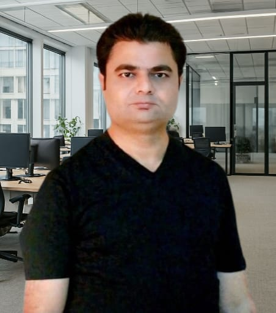

Muhammad Zulfiqar
Senior Architectural CAD Technician
Email: zulfiqarmohd0108@gmail.com
Phone: +91 8445662707
Download Resume (PDF)

Key Projects
- Dubai Expo 2020 – District & Parks, Water Features, Food Halls, Street Market
- Basra Appeal Court, Iraq – G + 1 + Roof
- Al Furjan Tower, Dubai – 2B + G + 13 Floors
- Shary Jwan Millennium 5-Star Hotel, Iraq – G + M + SF + 30 Floors
- Saraya Residential Towers, Abu Dhabi – 3B + G + 32 Floors
- Concorde Tower, JLT Dubai – 3B + G + 43 Floors
- Julfar Tower, Al Reem Island – 2B + G + 23 Floors
- ITS Building for RTA Dubai – G + M + 1 + Roof
- Hospital Projects – Baghdad, Basra, Safwan
- Residential Buildings – Media City, Al Furjan, Al Khail Gate